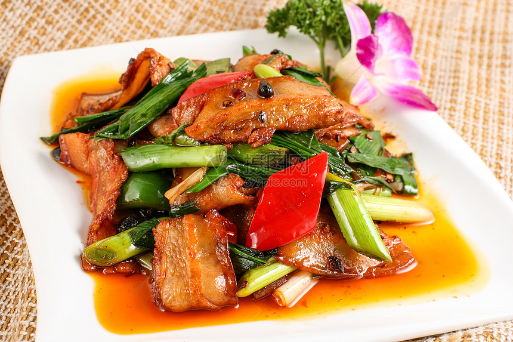
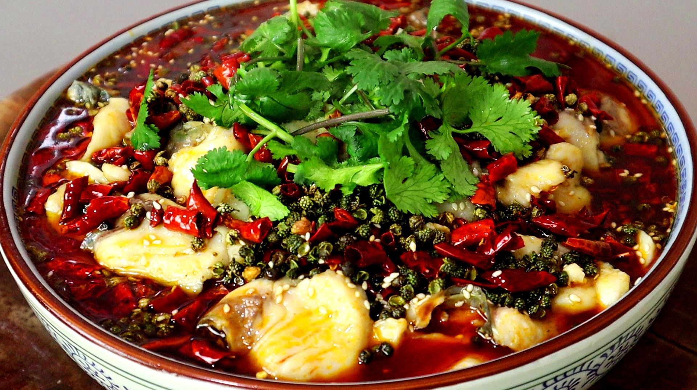
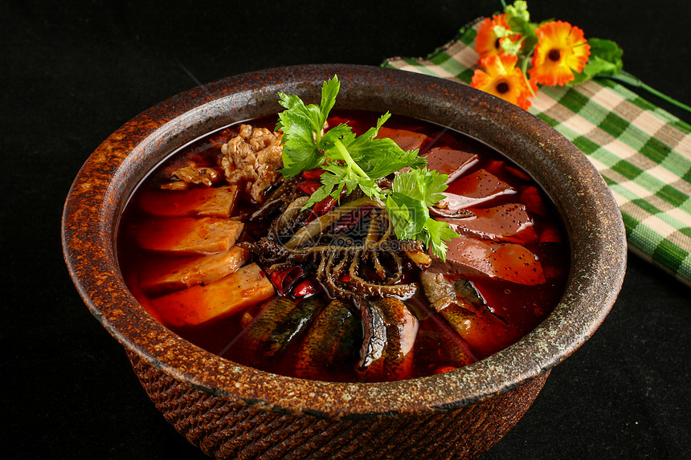

历史与文化背景
千年传承，融汇南北
川菜起源于秦汉，兴于唐宋，盛于明清，是中国饮食文化的重要瑰宝。四川盆地物产丰饶，“天府之国”的地理优势造就了川菜取材广泛的特点。
明末辣椒传入中国后，与四川本地的花椒、豆瓣等调料融合，形成了川菜麻辣鲜香的核心风味；同时川菜吸收中原、江南烹饪技法，兼具民间家常与宫廷宴席的双重特质，成都也被授予“世界美食之都”称号。
风味特色
麻辣为主，百味纷呈
川菜核心风味可概括为“麻、辣、鲜、香、甜、咸”，尤以麻辣为标志——花椒带来的“麻”与辣椒带来的“辣”相互交融，形成独特的味觉体验。
川菜拥有24种核心味型，涵盖鱼香、怪味、椒麻、酸辣、红油等，“一菜一格，百菜百味”是其最鲜明的特色；烹饪技法以小炒、干煸、干烧、凉拌见长，注重火候与调味的平衡。
经典代表菜品

麻婆豆腐
川菜经典家常菜，由陈麻婆创制，豆腐嫩滑，麻辣鲜香，咸鲜并重，是川菜“麻辣”味型的典范。

回锅肉
川菜“第一菜”，五花肉煸炒至焦香，搭配蒜苗、豆瓣，肥而不腻，咸鲜微辣，是四川家常菜的灵魂。

水煮鱼
川渝特色菜，草鱼片鲜嫩，汤汁红亮，麻辣味厚，热油浇淋后香气四溢，体现川菜“水煮”技法的精髓。

宫保鸡丁
甜酸微辣的经典味型，鸡肉滑嫩，花生米酥脆，集“酸、甜、辣、咸、香”于一体，是川菜走向全国的代表。

鱼香肉丝
鱼香肉丝是一道经典的川菜,具有咸、甜、酸、辣、鲜、香等特点，姜葱蒜味突出，其味型为“小荔枝口”，即先微甜后微酸。

毛血旺
毛血旺是一道经典的川菜，也是重庆江湖菜的鼻祖之一 ，具有麻辣鲜香、汁浓味厚的特点，成菜汤汁红亮，盆内红油通常不少于一半，且油滑透亮。